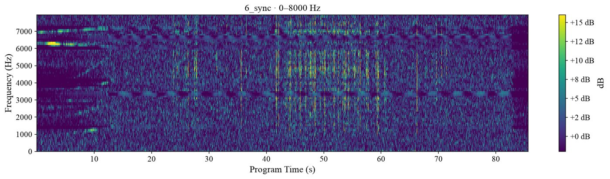
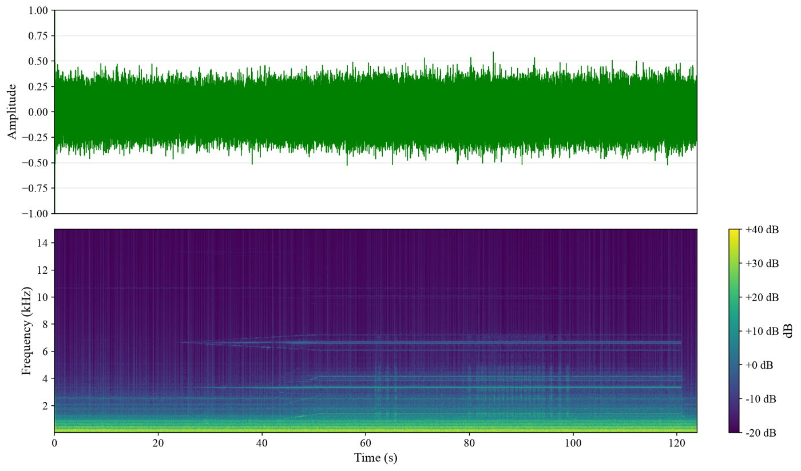

A directed energy deposition (DED) machine is loud, and most of that noise has nothing to do with the melt pool. To find a sound that actually belongs to the process, you need to know which subsystem is making which sound.

What I did
- Analyzed a six-run subsystem-isolation study to separate laser, powder-feed, and motion contributions in the audio.
- Aligned audio, video, and machine logs using oxygen readings, with a 0.17 s alignment residual in the analyzed recordings.
- Mapped G-code operations to machine-log timestamps and segmented the audio into contour, infill, traverse, and layer transition, so laser-on and laser-off runs of the same operation could be compared directly.
- Found that apparent broadband "laser events" also showed up in the laser-off controls. Averaging over 45 laser-on edges revealed a 7–8.5 kHz transient that is absent from the matching control, a candidate process signature for further study.
